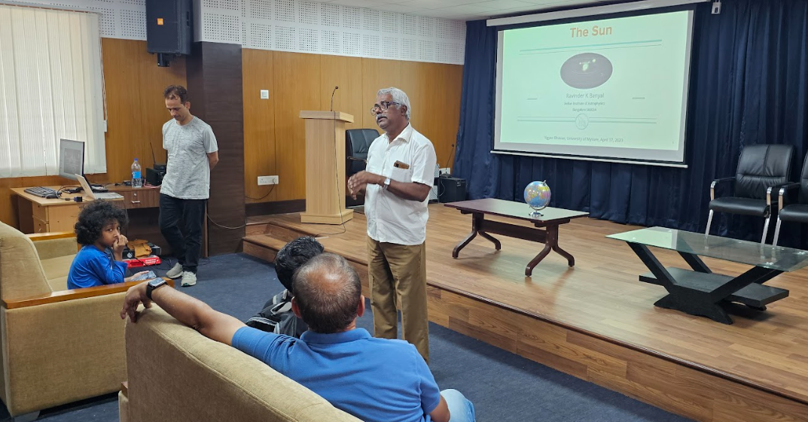
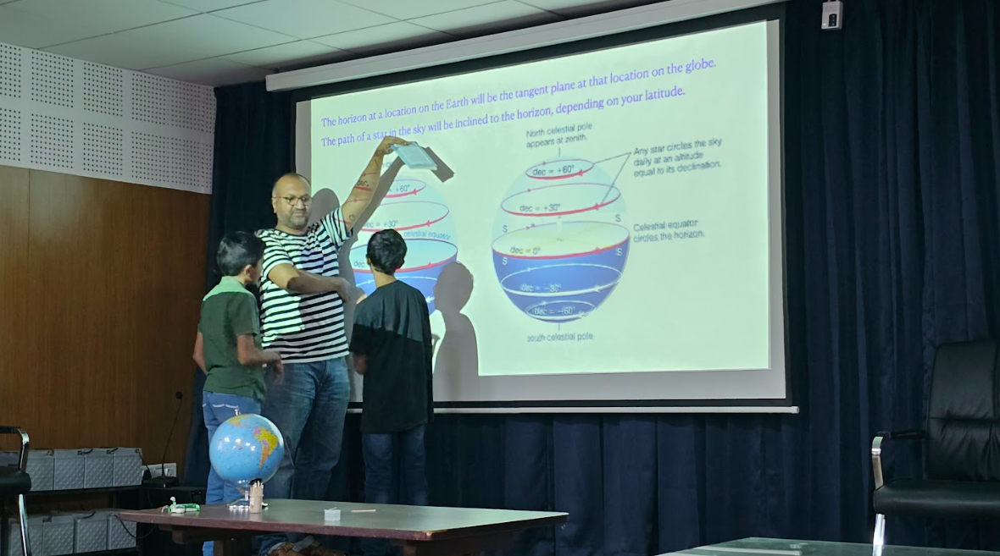
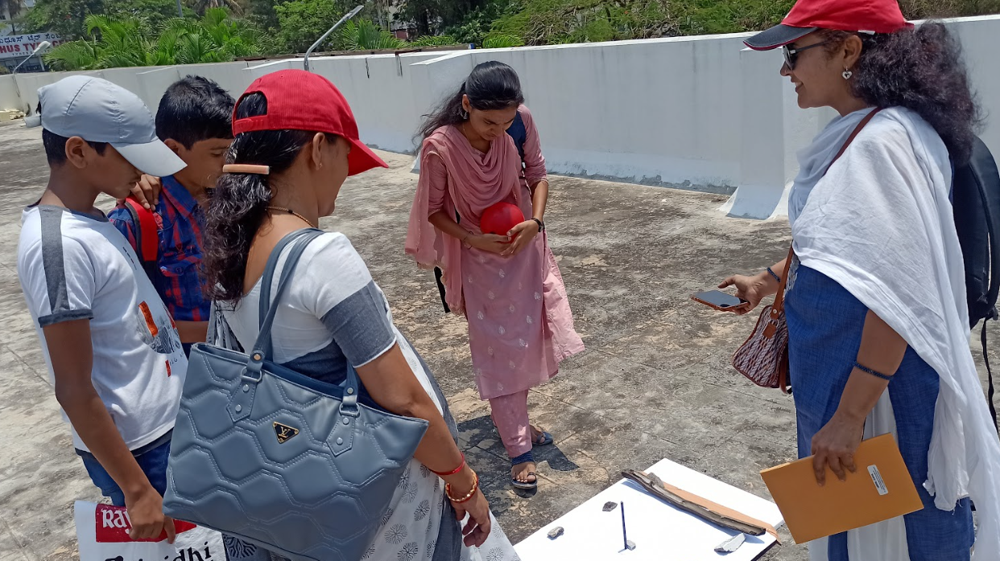
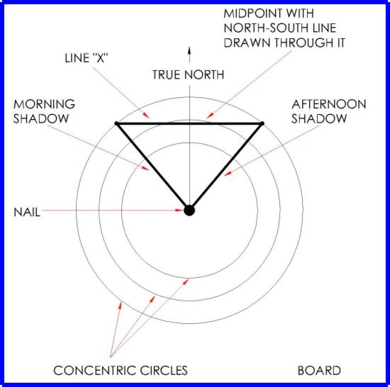
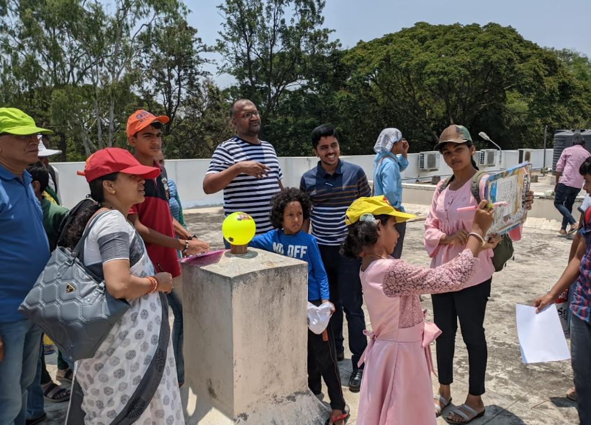

'Where’s the Shadow?' - A workshop in preparation for Zero Shadow Day
The Cosmology Education and Research Training Centre (COSMOS) is an upcoming state-of-the-art planetarium, along with a data training centre and resource centre in Mysuru. The Indian Institute of Astrophysics (IIA) has formed an Education and Public Outreach Committee (EPOC) for COSMOS. In this article, the author has given a brief account of a unique workshop organised for both students and parents in preparation for Zero Shadow Day (ZSD). The article also highlights the various factors involved in a science outreach activity.
The Cosmology Education and Research Training Center (COSMOS) is an upcoming state-of-the-art planetarium along with a data training centre and resource center in Mysuru. The planetarium will come up at the Sri Jayachamaraja Wadiyar Center for Higher Learning (JWCHL) campus of the University of Mysore (UoM) at the foot of Chamundi Hill in Mysuru.
The project is funded by the MPLAD funds of Hon’ble FM Nirmala Sitharaman, the Department of Science and Technology and the Department of Atomic Energy, Government of India. The project is steered by the Principal Scientific Advisor, Government of India, and is managed by the Indian Institute of Astrophysics, under an MoU between the University of Mysore and the Indian Institute of Astrophysics.
The Indian Institute of Astrophysics (IIA) has formed an Education and Public Outreach Committee (EPOC) for COSMOS consisting of science communicators and researchers across the country. IIA has hired two employees who are posted at Mysuru, who work to ensure the successful implementation of the outreach activities. The author is the Project Associate who coordinates all outreach activities on the ground. A Project Assistant has also been hired for a project to locate, digitise, and analyse astronomy content in Kannada. Both of them work in coordination with the EPO committee.
This year’s Zero Shadow Day was the first one for “COSMOS”. The outreach team of COSMOS, in association with the IIA, the University of Mysore (UoM), and Kutulali, came up with the idea of organising a workshop in preparation for Zero Shadow Day for the school students and their parents. Some people might be wondering, Why parents? In fact, that’s a valid question to ask! Considering the modern-day trends of parents getting involved in the activities of their children at school, music class, dance, karate, etc., we thought, why not give them a chance to involve themselves actively in a workshop? So, we sent out the posters to very few WhatsApp groups, asking interested people to register for the workshop and mentioning the fact that one of the parents should accompany the student on the day of the workshop. Interestingly, the response was overwhelmingly positive, with registrations from neighbouring cities and parents expressing their eagerness to attend the workshop over phone calls.
I should also mention the fact that because it was the summer holidays and the state election was around the corner, we could not access teachers and schools to participate in the workshop.
The workshop was held on April 17, 2023, at Vijnana Bhavan, University of Mysore, Mysuru. The program began with a talk by Ravinder Banyal, Associate Professor, IIA, on the necessity of studying the ‘Sun’ and then he discussed topics such as the various activities of the sun’s atmosphere, the formation of the sun, space weather, etc. Dr. Banyal successfully captured the attention of both parents and students by discussing the various topics in a language that they could comprehend. This was followed by a talk by Niruj Mohan Ramanujam on the science behind Zero Shadow Day. He went a step ahead and invited the students to the dias to involve them actively in the various aspects of the talk. Mr. Kollegala Sharma, PI-Kutuhali, who is a famous science writer and communicator in Kannada, was also present in the workshop and helped us reach the students and the parents in the local language, which is indeed a very important aspect of science communication in our country. Then we took the students and parents to the terrace of Vijnana Bhavan to do hands-on experiments. To be precise, this was the real-action time of the workshop.

Image 1: Dr. Ravinder Banyal (on left) and Mr. Kollegala Sharma (on right) interacting with the participants. [PC: Amoghavarsha. N]
We had arranged three important experimental setups for the kids. The first one was a projection of the sun’s image onto the wall with the help of two IIA-made 4-inch reflector-type telescopes. The second one was finding the length of the shadow made by the Gnomon (Sanskrit/Kannada: Shankhu Yantra). The third and final one was the ball-mirror experiment. To our surprise, parents were engaging themselves in all the activities and experiments, matching the enthusiasm of an 8-year-old kid who was the youngest participant in our workshop!

Image 2: Dr. Niruj Mohan Ramanujam explaining the science behind Zero Shadow Day to the young participants. [PC: Dr. Chrisphin Karthik]
With the above three experimental setups, the participants could witness important scientific phenomena, which are mentioned below.
- Observation of Sunspots: The students were given a chance to fiddle with the telescopes (of course, with proper instructions) to try and get an image of the sun on the screen. After proper focusing, sunspots were visible, and students had fun counting the number of spots.
- Movement of the Earth: As soon as the image was projected onto a screen, some students very distinctively noticed the movement of the sun’s image without any disturbance in the set-up. This helped in having a productive discussion regarding the earth’s movement around the sun.
- Angular Size of the Sun: Students and parents were briefed on how to calculate the angular separation of the sun in the sky by measuring the diameter of the circle of the sun’s projection.
- Solar Energy: Some small kids picked up some waste paper and placed it in front of the eyepiece to observe the phenomenon of the conversion of solar energy to heat energy. They were very happy when they were able to completely burn the paper.
- True North of Earth: With the help of Gnomon, the students were asked to note down the length of the shadow made by Gnomon every 10 minutes. The shortest shadow was observed at the local noon, and kids reported to us that after that point the shadow’s direction changed (you should know “why?”)! Using the points touching the concentric circles and drawing perpendicular to one of those circles, they could convince themselves that what they had found out was indeed the true direction of ‘North’. Please refer to image 4 for more details.

Image 3: The participants measuring the length of the shadow made by the Gnomon (Shankhu Yantra) [PC: Ms. Bhavani Joshi]

Image 4: Finding the true north of Earth using Shankhu Yantra / the method of equal altitudes [Credits: The Sundial Primer]
The program concluded with a wonderful feedback session from both the parents and students. The participants were also informed about the past and future activities of ‘COSMOS’ in and around the city before the dispersal. The Zero Shadow Day for Mysuru was on 23rd April 2023 at 12.22 PM.
I think I should also mention the fact that most of the experiments that were done on the workshop day were low-cost, self-made ones (which made me run very often to the local stationary shops), unlike the usual fancy stuff. For example, the Gnomon was a pencil which was glued to a thermocol (Polystyrene) sheet.
I feel that (and I assume most of the people who are reading this will agree with me on this) we should encourage and promote more and more low-cost and self-doable experimental arrangements to be relevant to all sections of students and people in society. It must be realised that science communication and outreach activities are much more than putting a presentation through a projector! And also, doing science-related activities in non-metropolitan cities, rural areas, and remote places takes much more effort compared to those done in metropolitan cities due to various degrees of constraints.

Image 5: Participants doing the Ball-mirror experiment [PC: Ms. Bhavani Joshi]
I would like to thank Dr. Niruj Mohan Ramanujam, SCOPE Head, IIA, for giving me enough freedom, constant support, and new ideas to carry out science communication and public outreach activities in Mysuru under the ‘COSMOS’ and IIA roofs. I also thank Prof. Annapurni Subramaniam, Director, IIA, for her encouragement and support. I must thank my friends and colleagues, Mr. Vikranth Pulamathi (SCOPE Associate, IIA), Mr. Vishaak K. B. (Intern at SCOPE, IIA), Mr. Punith. R. (Project Assistant, COSMOS), Ms. Bhavani (Intern at COSMOS, IIA), and all the volunteers of ‘COSMOS’ in Mysuru.
For more details, you can follow us on Instagram, Facebook [@Cosmos Mysuru] and Twitter. I hope you will also listen to our podcast on Spotify. Thank you for your time and patience!